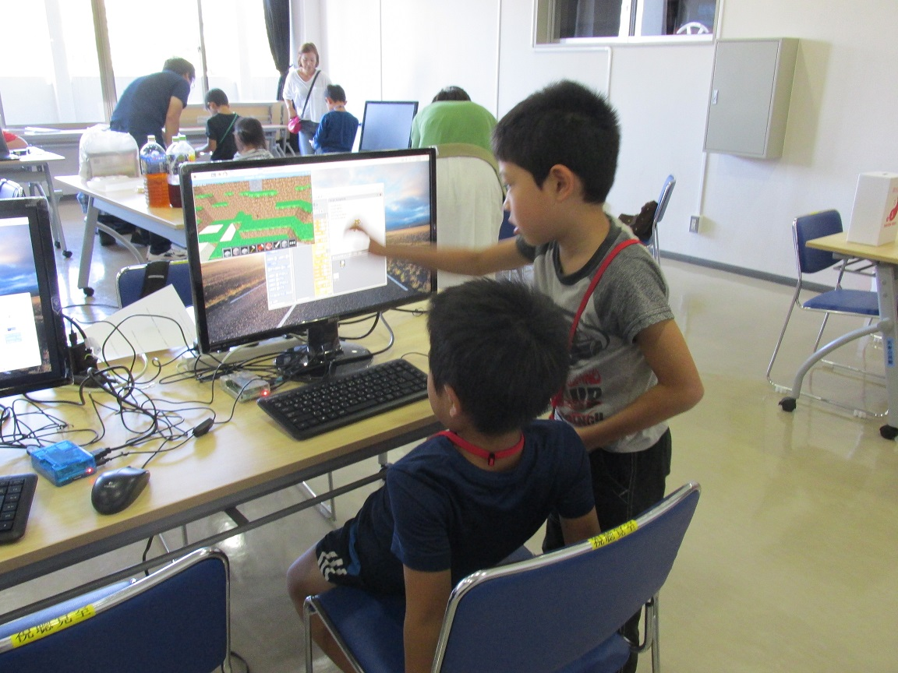
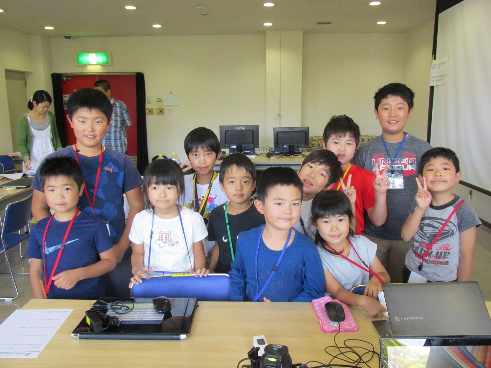

子どものためのプログラミング道場
栃木県 さくら市
栃木県 さくら市
第３回のCoderDojoさくら開催です！ 会場はいつものさくら市氏家公民館です。
新しいニンジャ４名を含む、これまででいちばん多い１１名が参加してくれました！どうもありがとうございます！

今回はお菓子のポッキーを使ったプログラミング教材「GLICODE」を、メンターのたかいさんが紹介しました。
はじめは戸惑い気味でしたが、慣れてくるとどんどんクリアして、くり返しや条件判定の練習もできました。
ニンジャのひとりが編み出した、コード圧縮技術！？ これでもちゃんと認識できました。一度の撮影でたくさんのプログラムを実行できて、ポッキーも食べられて一石二鳥ですね！

発表タイム。今回もみんな張り切って楽しそうに発表してくれました。ニンジャがたくさん集まって、パソコンを囲んでわいわいと楽しそうです。

第３回もニンジャ・メンターともに楽しんで、無事終了しました。次回は10月29日(日)を予定しています。ぜひ来てくださいね！

第３回のダイジェスト動画を作成しました。こちらもぜひご覧ください。